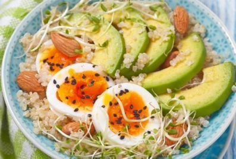

JLCuisine
Inspirez-vous des plus créatifs !

Avocats pochés
Ingrédients
- 2 avocats
- 2 oeufs
- 150 grammes de riz
- 30 grammes d'amandes
- Persil
- Huile d'olive
Etapes
- Faire chauffer les oeufs dans une casserole jusqu'à qu'ils soient bien fermes et cuits à
l'intérieur. Le jaune doit être à peine coulant.
- Découper les avocats en lamelles.
- Faire cuire le riz pendant 10 minutes. Saler. Poivrer.
- Parsemez le riz d'amandes.
- Ajouter le persil et l'huile d'olive.
- Assembler le tout et bonne dégustation !